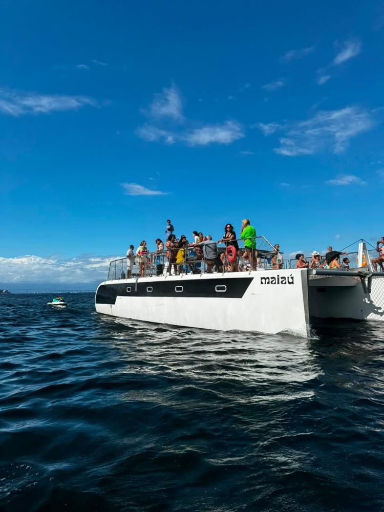

EXPERIENCIA RIO IA
Una tarde en barco
por la Bahía
Catamarán o yate privado, con música, churrasco y el Río más lindo de fondo. Todo resuelto para que ustedes solo disfruten.
Barco privado5 horasChurrasco a bordoAtardecer
VALORDesde R$ 370
Por persona, según el barco, el plan y el tamaño del grupo. Te armamos la propuesta justa.
Elegí tu barco

Catamarán · hasta 50 personas
Mucho espacio, red de proa para tirarse al sol, bar a bordo y livings. Ideal para grupos grandes que quieren bailar y estar todos juntos.

Yate · hasta 30 personas
Cabina con living interior y baño, solárium en la proa y popa con sillones. Más íntimo y elegante.

Otros yates
Tenemos yates de distintos tamaños y valores: te armamos la opción justa para tu grupo.
Qué incluye
- Barco privado con tripulación, 5 horas
- Servicio de churrasco a bordo
- Plan Animación: 8 animadores y animadoras
- Plan Full: además barman con open bar y churrasco con parrillero
- Coordinación por WhatsApp de principio a fin
Los planes
Solo barco: ustedes llevan la comida y la bebida.
Barco + animación: suma 8 animadores.
Full · todo incluido: barco, animación, open bar y churrasco. Solo suban y disfruten.
Barco + animación: suma 8 animadores.
Full · todo incluido: barco, animación, open bar y churrasco. Solo suban y disfruten.
Cómo reservar
Reserva: se confirma con el 50% para asegurar la fecha; el resto, hasta la víspera. Pix o tarjeta (con tarjeta +5%).
Reservar por WhatsApp